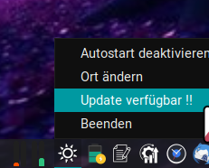

Wettervorhersage mit Tray-Icon
Diese schlanke Wetter-App bezieht ihre Daten über die API von open-meteo.com und läuft dezent im System-Tray. Über das Tray-Icon lässt sich die Anwendung bequem öffnen, um den aktuellen Wetterstandort anzupassen oder die Vorhersage einzusehen.
Was X-Live Wetter bietet:
• Stündliche Wetterdaten
• Eine 5-Tage-Vorhersage
• Detaillierte Tagesprognosen im Zwei-Stunden-Takt von 0 bis 22 Uhr
Ideal für alle, die schnell und unkompliziert über das Wetter informiert bleiben möchten – direkt vom Desktop aus.
das Tray icon zeigt aktuelle Temperatur und Wetterstatus an
mit einem rechtsklick einfach den Ort ändern
neue Updates werden im kontextmenü des Tray-Icons angezeigt
